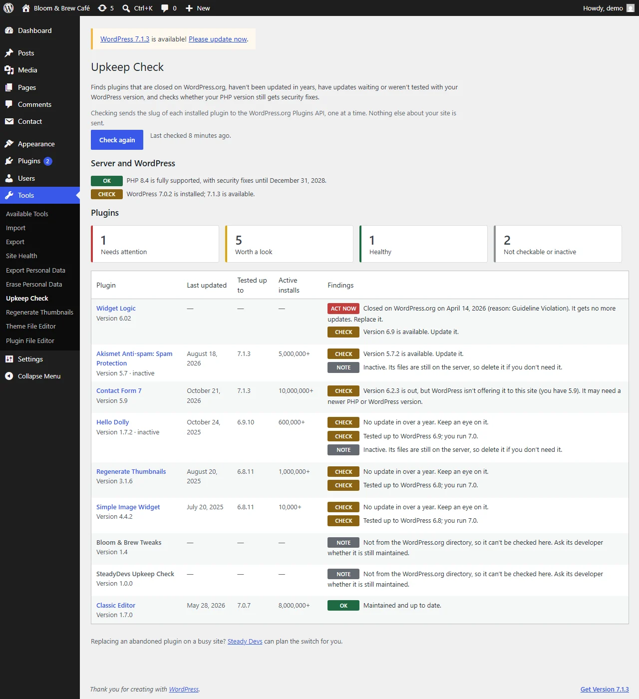
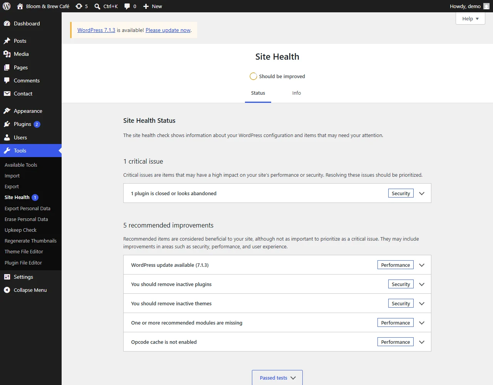

在 WordPress.org 上已关闭
被移出目录的插件（通常因为安全问题）仍在您的网站上运行，没有任何警告。Upkeep Check 会显示它何时、为何被关闭。
SteadyDevs Upkeep Check · 免费 WordPress 插件
插件一旦停止更新，就不再获得安全修复，而 WordPress 不会提醒您。Upkeep Check 找出已被关闭、遗弃或落后的插件，并用直白的话告诉您每一个该怎么处理。
版本 1.3.0 · GPL，永久免费 · WordPress 6.0+ · PHP 7.4+ · 无需账户，无需注册 · 已上架 WordPress.org
1 plugin is closed or looks abandoned
Widget Logic was closed on WordPress.org on 14 April 2026. Replace it.
工作原理
这些是真实截图，来自在演示网站上对照 WordPress.org 正式目录进行的一次检查。
报告
进入 Tools → Upkeep Check，点击 Check my plugins。每个插件都会得到一个可以据以行动的结论，旁边是支撑它的事实：上次更新时间、测试过的 WordPress 版本，以及有多少网站在使用它。

Site Health
检查之后，Tools → Site Health 会在有插件被关闭或遗弃时显示严重问题，在有更新待处理时显示建议。它读取的是已保存的报告，所以打开 Site Health 和以前一样快。

检查内容
Plugins 页面显示的是更新。它不会显示哪些插件再也不会有更新了。
被移出目录的插件（通常因为安全问题）仍在您的网站上运行，没有任何警告。Upkeep Check 会显示它何时、为何被关闭。
超过两年没有更新的，标记为需要处理。超过一年没有更新的，标记为需要留意。
作者尚未在您所用 WordPress 版本上测试过的插件。
当目录中的版本比 WordPress 提供给您网站的更新（通常因为它需要更新的 PHP 或 WordPress），会告诉您为什么该更新没有出现。
已停用但仍留在服务器上。删掉您不需要的。
您的 PHP 版本是否仍获得安全修复，以及截止日期，来自 php.net 自己的时间表。
记录插件、主题、WordPress 和 PHP 的变化、操作者，以及随后发生的致命错误和发送失败的邮件。每个错误都会列出它之前 24 小时内的变化；如果之前正好更新过同一个插件，一个按钮就能把它回滚到上一个版本。了解它如何工作。
轻量设计
没有后台扫描，不需要账户。目录检查在您要求时运行，或在您开启后每周运行一次。变化记录只在发生变化或出现致命错误时写入，而且绝不离开您的网站。删除本插件会清除它保存的一切。
开始使用
发现了不能说停就停的插件？
一个运行着您的表单、预订或结账的被遗弃插件，不能一删了之。我们的工程师可以找到仍在维护的替代品，迁移您的数据，并在不停机的情况下完成切换。
常见问题
下载 Upkeep Check，点一个按钮，看看哪些插件需要您处理。
告诉我们您发现了什么，或希望它检查什么。我们通常在一个工作日内回复。